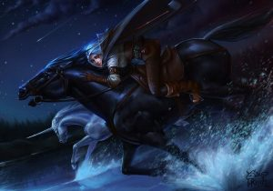

The Lady of the Lake, written by Andrzej Sapkowski and first published in Poland in 1999, is the seventh book in The Witcher series and the fifth novel in the saga. It continues the story from The Tower of the Swallow
Buy Lady Of the Lake Here
Lady Of The Lake US Cover Published 14-March-2017
After walking through the portal in Tor Zireael while narrowly escaping death, Ciri finds herself in a completely different world... an Elven world. She is trapped there with no apparent way out. Time does not seem to exist and there are no obvious borders or portals to cross back into her home world.
But this is Ciri, the child of prophecy, and she will not be defeated. She knows she must escape to finally rejoin the Witcher, Geralt, and his companions - and also to try to conquer her worst nightmare. Leo Bonhart, the man who chased, wounded and tortured Ciri, is still on her trail. And the world is still at war. The story opens with Ciri bathing in a pond in an unknown world. As she does so, Sir Galahad of the Arthurian legend stumbles upon her. After mistaking her for the fabled Lady of the Lake, they talk and Ciri recounts her story.
The story cuts to a point in time that takes place after the story, where a young maiden, Condwiramurs, meets the Lady of the Lake, Nimue, to study the legend of Geralt and Ciri. They do so through intense study of the pictures portraying the characters and events from the story, to guide dreams. Eventually Condwiramurs starts to dream of the events at the behest of the Lady of the Lake. Her first dream is that of Stefan Skellen and Leo Bonhart, who are revealed to be working for Vilgefortz and have imprisoned Yennefer.
The dream ends and a new dream starts, this time dealing with the adventures of Geralt. Geralt has been completing monster contracts in the Beauclair city of Toussaint while the rest of the group, Dandelion, Regis, Milva, Angouleme, and Cahir, have been exploring and relaxing. Geralt eventually starts a relationship with the castle sorceress, Fringilla. Fringilla is one of the select members of the Lodge, a secret group of sorceresses that wish to control the political world, and is assigned to delay Geralt from seeking out Yennefer and Ciri. Geralt eventually receives a contract to investigate and potentially kill several monsters which live in an abandoned castle near the city of Touissant. While accomplishing the task, he overhears Skellen, Bonhart, and several other associates talk about where Vilgefortz and Yennefer are located and how Ciri is missing. Geralt rushes back to Touissant in order to gather his group and leave to save Yennefer.
Ciri is shown to have arrived in a foreign world after entering the portal at the Tower of the Swallow. This world appears to be ruled by elves, whom live in peace except for occasional fights with the unicorns. She meets with several elves, notably Avallac'h and Eredin Bréacc Glas, who is the leader of a cavalry unit called Dearg Ruadhri and reveals that the unicorns have become restless since she entered their world. She is told she must bear the child of their king, Auberon, who appears to be addicted to fisstech and is emotionally cold. Despite her disgruntlement with the situation, she agrees. After several fruitless nights, she confronts the other elves of the castle and demands that she be let go, as it appears their king is not interested in her, and that she wants to return to her friends. She is told that time happens differently in this world, and that once her task is accomplished she will be returned to her time. Eventually Eredin confronts her, giving her a vial and hinting that she should poison Auberon.
In a bout of frustration, she rides her horse, Kelpie, as far away as possible from the castle, despite the warnings that barriers prevent her from leaving the place. As she is riding she is cornered by several unicorns, who threaten to kill her, fearing her power. She is spared, as one of the unicorns, Ihuarraquax, recognizes her as saving him from death earlier. The unicorns then reveal how she can bypass the barriers. She finds Auberon dead from overdose and then steals a boat for herself and Kelpie, which is revealed to be the only way to pass the barriers. She is confronted by Eredin Breacc Glas, whom is enraged by Auberon's death and tries to leave abruptly. A brief battle ensues, in which she injures Eredin and escapes to find Ihuarraquax and co. waiting for her. Eredin and his riders soon find her, and a battle between the Dearg Ruadhri and the unicorns ensues. Ciri, in the midst of chaos, teleports out of the world with the assistance of Ihuarraquax.
The story now follows Jarre, a monk that chooses to join the army which has formed due to the alliance between all of the Northern Kingdoms to repel the invading Nilfgaardian army. He meets up with several individuals, including characters seen earlier in the story, and joins a unit called the PFI, or "Poor Fucking Infantry."
Ciri's story continues, where she is jumping between worlds and times in order to find her own, still running from Eredin and the Dearg Ruadhri. She briefly appears before the Lady of the Lake and Condwiramurs, who point the way and wish her luck on her journey as she leaves soon after.
Ciri running on her horse
We continue with Jarre, where the armies of the Northern alliance and Nilfgaard have collided in a valley near the town of Brenna. The battle lasts hours, teetering the brink of victory and defeat several times. Elven units, led by Yaevinn, attack the flanks of the Northern army, go so far as to slaughter the injured in medical tents. As the Northern army finally starts to rout, a contingent of Redanian cavalry charge over a hill that was not scouted properly by the elves. This causes panic amongst the Nilfgaardian forces, which soon panic and are abruptly slaughtered. The commander of the Nilfgaardians, Coehoorn, is killed in an attempted escape. The battle is referred to as the Miracle at Brenna soon after. The Northern alliance soon push all Nilfgaardian forces south of the Yaruga, which served as the border, and a ceasefire is declared in order to make peace.
Ciri is soon revealed to have gone to Vilgefortz's castle in order to save Yennefer herself, unable to find Geralt and knowing that Yennefer would die without her help. Ciri asks that Yennefer be released in exchange for herself, but Vilgefortz laughs and imprisons her anyway. Geralt arrives at the castle quickly after Ciri, not knowing that Ciri arrived earlier. Geralt and co. storm the castle, killing many of Skellen's men before Milva eventually dies. Geralt and Regis go to find Yennefer, whereas Cahir and Angouleme go to save Ciri once they learn she is here. Yennefer is saved by Geralt, who indiscriminately kills to save her. Bonhart frees Ciri, desiring to kill her in a fair fight. Ciri flees, and encounters Cahir, who fights Bonhart himself to save Ciri. Cahir is killed outright, and soon after Angouleme dies in the same manner. Ciri and Bonhart soon fight, with Ciri finally winning using the environment to her advantage. Ciri takes the three witcher medallions that Bonhart claimed to have taken off the corpses of witchers previously. Ciri runs to find Geralt and Yennefer.
Meanwhile, Geralt, Regis, and Yennefer seek and fight Vilgefortz. Regis is obliterated in the fight, turning into a molten mass of dust. Geralt and Vilgefortz fight, with Geralt being victorious. Ciri eventually finds Geralt and Yennefer, who chose to go outside. On their way to the courtyard, they kill more of Skellen's men. As they reach the courtyard, they find the Emperor of Nilfgaard's men taking the castle and imprisoning any remaining men. The Emperor is revealed to be a long-lost acquaintance of Geralt: Duny, Ciri's father. He plans to marry her so they can have a powerful child. Geralt and Yennefer are told to commit suicide while Ciri will be taken to the capital of Nilfgaard to be married to the Emperor. Geralt, without much of a choice, accepts, and Yennefer and Geralt take a bath together, with a dagger left in the room. In the courtyard, Duny sees Ciri, and regrets his plan. Without revealing their relationship, he kisses her forehead and lets her go free. She goes back and finds Geralt and Yenneger, saying that the Emperor's men left without a word. The three depart, with Ciri leading the way to all of the places during her adventures earlier in the story. They eventually return to Touissant, and save Dandelion from being executed. The four now split into two groups, Dandelion and Geralt heading to Rivia and Ciri and Yennefer going to meet with the sorceresses' Lodge.
During Geralt's time in Rivia, a riot erupts, in which humans are killing non-humans indiscriminately. He meets a couple of his dwarven friends in a pub, but when they are targeted by the mob he enters the fray and kills several individuals before being impaled by a pitchfork. Ciri, Yennefer, and Triss Merigold arrive in Rivia shortly after the rioting starts, and they eventually find Geralt on the verge of death. Yennefer attempts to use all of her magical strength to revive him, then passes out beside the witcher. Ihuarraquax shortly appears and channels her power through Ciri to heal Geralt and Yennefer. Ciri sends her trusted mare, Kelpie, with Ihuarraquax to their world. The rioting moves away from the area, and Ciri brings their bodies out onto a boat on a nearby lake. While Triss, Dandelion, and their dwarven friends say their goodbyes, Ciri takes off into the lake which erupts into a light and the three disappear.
Geralt Dies
Ciri ends recounting her tale to Galahad, who has been listening intently the entire time. Ciri says she "could" claim that the tale ends with Geralt and Yennefer waking in an unknown location, comforting each other; that they marry, and that a celebration ensued between all the different dead and alive characters of the saga. Galahad eventually invites her to the court at Camelot, which she accepts. The saga ends with Ciri and Galahad riding side by side, holding hands.